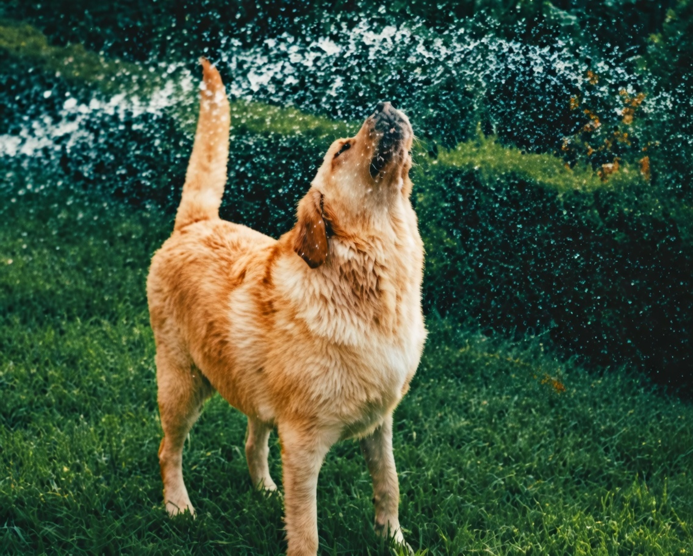

Dog Burn Warning: Always Test Garden Hose Water Before Playtime


As we welcome the warmer months, many of us look forward to spending more time outdoors with our furry friends. However, with the rising temperatures, it's essential to be aware of the potential risks that come with outdoor playtime, particularly when it comes to garden hose safety for dogs. At our veterinary practice, we've seen cases of dog burn from hose water, and it's crucial that we take the necessary precautions to prevent such accidents. We want to ensure that our pets stay safe and healthy, and that's why we're sharing our expert advice on how to protect your dog from hot water burns.
Table of Contents
Introduction to Garden Hose Safety
As pet owners, we know how much our dogs love playing with water, whether it's running through a sprinkler or getting a good soak from a garden hose. However, it's essential to remember that garden hoses can pose a significant risk to our pets, especially during the summer months when the water temperature can rise rapidly. We've seen cases where dogs have suffered severe burns from hot water, and it's crucial that we take the necessary precautions to prevent such accidents.
Understanding the Risks of Hot Water Burns
Also Read
Check out more pet care guides hereHot water burns can be devastating for dogs, and it's essential to understand the risks associated with garden hose safety. When the water temperature rises above 100°F (38°C), it can cause severe burns, including second and third-degree burns. These burns can be extremely painful and may require immediate veterinary attention. We recommend that you always test the water temperature before letting your dog play with the garden hose.
As a veterinary tip, it's essential to remember that dogs can't regulate their body temperature as efficiently as humans, so they're more susceptible to heat-related injuries. Always prioritize your dog's safety and take regular breaks to ensure they don't overheat.
Factors That Contribute to Hot Water Burns
Several factors can contribute to hot water burns, including the time of day, the color of your dog's coat, and the temperature of the water. We've compiled a table to help you understand the risks associated with hot water burns:
| Factor | Risk Level | Precautions |
|---|---|---|
| Time of Day | High | Avoid using the garden hose during peak sun hours (11am-3pm) |
| Coat Color | Medium | Dogs with dark coats are more susceptible to heat-related injuries |
| Water Temperature | High | Always test the water temperature before letting your dog play |
Expert Tips for Safe Outdoor Playtime
As pet owners, we want to ensure that our dogs stay safe and healthy during outdoor playtime. Here are some expert tips to help you prevent hot water burns:
- Always test the water temperature before letting your dog play with the garden hose
- Avoid using the garden hose during peak sun hours (11am-3pm)
- Provide regular breaks to ensure your dog doesn't overheat
- Supervise your dog at all times during outdoor playtime
Additional Safety Precautions
In addition to testing the water temperature, there are several other safety precautions you can take to ensure your dog's safety. These include:
- Using a thermometer to check the water temperature
- Providing a shaded area for your dog to cool off
- Avoiding the use of hot water hoses during extreme heat waves
Common Mistakes to Avoid
As pet owners, we want to ensure that our dogs stay safe and healthy. However, there are several common mistakes that can increase the risk of hot water burns. These include:
- Not testing the water temperature before letting your dog play
- Using the garden hose during peak sun hours (11am-3pm)
- Not providing regular breaks to ensure your dog doesn't overheat
Conclusion
In conclusion, garden hose safety is a critical aspect of summer dog safety. By following our expert tips and taking the necessary precautions, you can help prevent hot water burns and ensure your dog stays safe and healthy. Remember to always test the water temperature before letting your dog play with the garden hose, and provide regular breaks to ensure they don't overheat. If you have any concerns about your dog's safety or health, consult with your veterinarian for personalized advice.
Dr. Amelia Richardson
DVM, Senior Veterinary Editor
Veterinarian with 12+ years of experience in small animal medicine, pet nutrition, and behavioral science. Passionate about helping pet owners provide the best care for their furry companions.
Leave a Comment